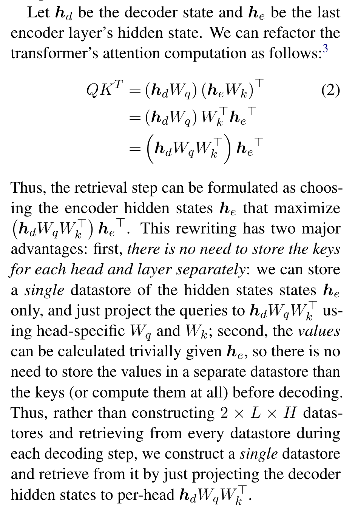

Unlimiformer: Long-Range Transformers with Unlimited Length Input
Abstract
Transformer-based models typically have a predefined bound to their input length, because of their need to potentially attend to every token in the input. In this work, we propose Unlimiformer: a general approach that can wrap any existing pretrained encoder-decoder transformer, and offload the attention computation across all layers to a single
In this work, we propose Unlimiformer: a general approach that can wrap any existing pretrained encoder-decoder transformer, and offload the attention computation across all layers to a single k-nearestneighbor index; this index can be kept on either the GPU or CPU memory and queried in sub-linear time. This way, we can index extremely long input sequences, while every attention head in every decoder layer retrieves its top-k keys, instead of attending to every key. (p. 1)
we encode overlapping chunks of the input, following Ivgi et al. (2022), keeping only the middle half of the outputs from each chunk, to ensure that the encodings have suf (p. 2)
ficient context on both sides. Finally, we index the encoded inputs in a datastore, using a library such as Faiss (Johnson et al., 2019). (p. 3)
Instead, we present a different order of computing the well-known transformer attention formula, which allows us to store a single datastore across all attention heads and all decoder layers. (p. 3)

Notes
Comment: Preprint